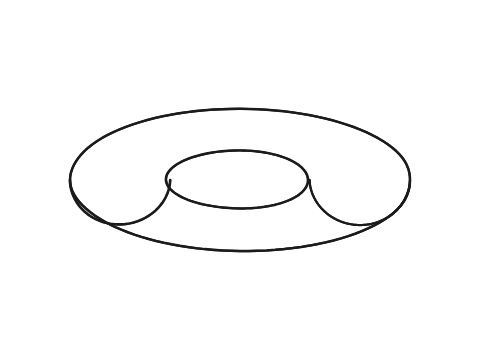
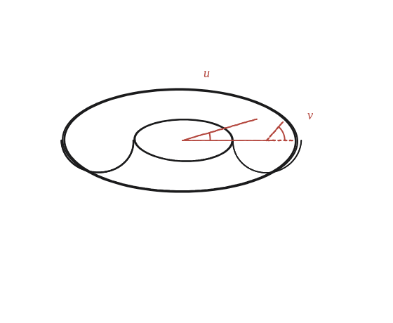
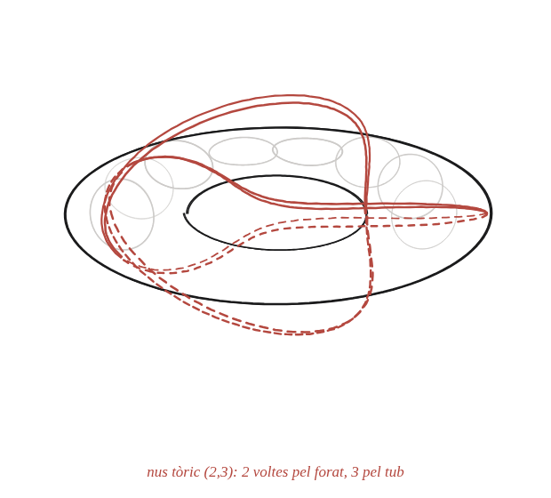

Se t'acut alguna manera de descriure una hèlix sobre un tor?

Què hem de produir
Una manera de descriure un moviment sobre la superfície d'un tor (un donut) que sigui l'anàloga natural de l'hèlix sobre un cilindre —no fa falta cap equació, només una descripció clara del moviment.
Un tor té dos cercles, no un
Un punt sobre un tor es pot descriure per dos angles: quina posició té al voltant del forat central (com les hores d'un rellotge vist des de dalt), i quina posició té al voltant del "tub" prim (com les hores d'un rellotge vist de costat, girant al voltant del propi tub). Una hèlix sobre un cilindre avançava a velocitat constant en gir i en alçada alhora: quin seria l'anàleg amb aquests dos angles?

La construcció
Un tor amb una corba dibuixada en sanguina que avança uniformement al voltant del tub mentre avança, també uniformement, al voltant del forat central —una corba que s'enrotlla moltes vegades abans de tancar-se, o que no es tanca mai, si la proporció entre les dues velocitats és irracional.

Tancar-ho
Es fan créixer els dos angles cadascun a velocitat constant però diferent: mentre un avança una volta sencera, l'altre n'avança p/q (una fracció). Si p/q és racional, la corba es tanca després de q voltes del primer angle; si és irracional, la corba no es tanca mai.
Un avís important sobre aquest darrer cas: la corba no "omple" el tor —una corba no pot arribar a ser una superfície, per molt que doni voltes— sinó que hi passa tan a prop com es vulgui de qualsevol punt. Donat un punt del tor i una distància, per petita que sigui, la corba hi acaba passant més a prop que aquella distància.
L'anàleg tòric de l'hèlix és fer avançar els dos angles del tor a velocitats constants però diferents, en proporció p/q. Amb p/q racional, la corba es tanca després d'un nombre finit de voltes; amb p/q irracional, no es tanca mai, però passa arbitràriament a prop de tots els punts del tor.
Comprovació
Amb p/q=2/3: la corba fa 2 voltes completes al voltant del forat central pel mateix temps que en fa 3 al voltant del tub, i es tanca exactament on va començar —es pot comprovar contant quantes vegades creua un mateix meridià (ha de ser 3) i un mateix paral·lel (ha de ser 2).
Aquesta corba es diu "nus tòric" quan p i q no tenen cap factor comú: per a segons valors de p,q dona lloc a nusos autèntics —que no es poden desfer sense tallar-los— l'exemple més senzill dels quals, amb p/q=2/3, és el trèvol, el nus més simple que existeix.